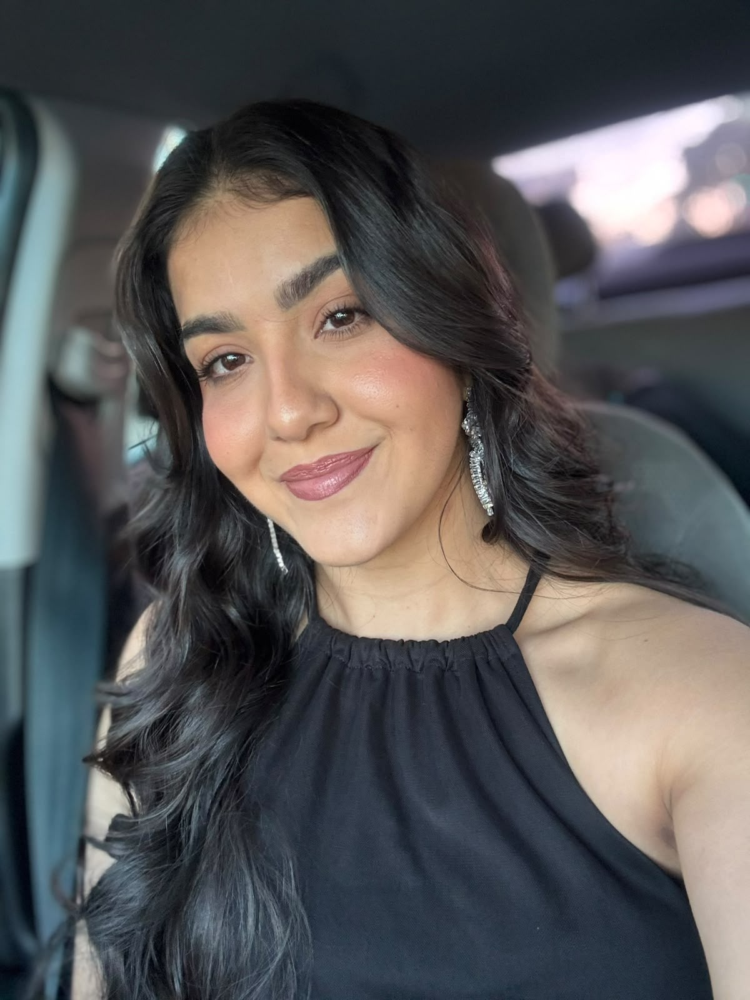

Voltar a respirar bem muda tudo.
Atendimento individual, técnico e de perto para quem quer recuperar o fôlego e a qualidade de vida, do primeiro exercício à alta.
Cuidado que respeita o seu ritmo.
A fisioterapia respiratória reúne técnicas para desobstruir as vias aéreas, reexpandir os pulmões, fortalecer a musculatura da respiração e ensinar o corpo a gastar menos energia para respirar.
Aqui, cada paciente é um plano. Eu avalio, explico cada passo e acompanho de perto a sua evolução, porque quem chega com falta de ar precisa de técnica e também de acolhimento.
Sem pressa, sem protocolo genérico e sem promessa milagrosa.
Quem pode se beneficiar.
Pós-COVID
Cansaço, falta de ar e perda de condicionamento depois da infecção.
Asma e bronquite
Educação respiratória e técnicas para controlar sintomas no dia a dia.
DPOC
Reabilitação pulmonar para ganhar autonomia e reduzir a falta de ar.
Idosos
Prevenção de complicações e manutenção da força respiratória e da independência.
Pré e pós-operatório
Preparo e recuperação para evitar complicações pulmonares após cirurgias.
Crianças
Cuidado respiratório pediátrico, com abordagem leve e participação da família.

Vitória Andrade
Sou fisioterapeuta com foco em fisioterapia respiratória, uma área ainda pouco conhecida e que faz enorme diferença na vida de quem perdeu o fôlego.
Acredito em técnica baseada em evidência e em atendimento de perto: escuto, explico e acompanho cada paciente como a pessoa que é, e não como um diagnóstico.
Técnica com presença.
Atenção individual
Cada plano nasce da sua avaliação, nunca de uma receita pronta.
Explicação clara
Você entende o que está sendo feito e por quê.
Evolução acompanhada
Reavaliações regulares para ajustar a conduta e mostrar o progresso.
Respirar bem não é luxo. É a base de tudo o que a gente quer continuar fazendo.
Meu compromisso com você.
Você vai entender o que está sendo feito e por que, em cada sessão.
Seu ritmo manda. Eu ajusto o tratamento ao seu corpo e ao seu momento.
O objetivo é a sua autonomia: que você precise cada vez menos de mim.
Antes de começar.
O que a fisioterapia respiratória trata?
Atua em quadros como asma, DPOC, sequelas de COVID, pneumonias, pré e pós-operatório e doenças respiratórias infantis, sempre de acordo com a avaliação individual.
Preciso de encaminhamento médico?
Não é obrigatório para a avaliação. Quando houver acompanhamento médico, trabalho em conjunto com a equipe e respeito às orientações dele.
Como é a primeira consulta?
Conversa sobre histórico e sintomas, avaliação da respiração e da capacidade funcional e definição do plano com você.
Atende crianças e idosos?
Sim. A abordagem é adaptada à idade, ao quadro clínico e ao conforto de cada paciente.
Quantas sessões vou precisar?
Depende do quadro e dos objetivos. Isso é definido na avaliação e revisado conforme a sua evolução.
Pronto para respirar com mais leveza?
Chame no WhatsApp e conte o que está acontecendo. Eu respondo pessoalmente e organizamos a sua avaliação.